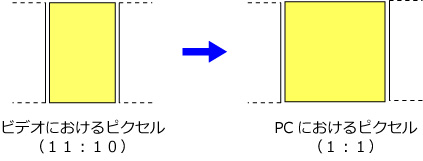
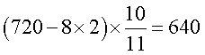

さて，ビデオ信号などのアナログ信号を，PCで取り扱えるようなデジタル信号に変換する際には，いろいろな注意点があります．
ビデオ信号の場合では，
ピクセル縦横比
が重要なポイントです．
アドビのサイト，にありますように，NTSC信号においては，ピクセルの形が正方形ではありません．
| イメージサイズ | フレームレート | 縦横比 | ディスプレイ | |
| NTSC | 720×480 | 29.97 | D1 | インターレース |
| PAL | 720×576 | 25 | D1 | インターレース |
| コンピュータ | 可変 （非常に大きい） |
- | 正方形 | プログレッシブ |
NTSCビデオのイメージでは，走査線の数（縦方向の分解能）が５２５本ありますが，業務用のSMPTE 259M規格で
720×486
に変換します．
さらに，４８６をきりのいい，４８０にして，
720×480
とします．
縦横比は，720:480=3:2，ですね．
あれ？テレビは4:3じゃなかったでしたっけ？
それは，アドビのこのサイトによると，先に述べたように各ピクセルは、ピクセル縦横比 が 10:11 (縦長のピクセル) の矩形，となります．
何で，そんな面倒くさいことをしたの？ですが，こちらのサイトにあるように，
走査線で作られる画像は水平に隙間がある。正方形画素を横方向に密接して並べ、縦方向は若干の隙間を持たせて並べると、理解できる
ということでしょうか．

となると，そのままPCへ持って行くと，横に広がった映像になってしまっているので，普通は縦横比を調整して，PCで表示しています．
Windows Media Playerでは，映像表示中に，プロパティを見ると，
640x480
になっていますね，これは，たぶん，

となるように，リサイズして表示しているものと思われます．
この１６ドット分を引いているのは，実際に両端の画像をトリミングしているかどうかは，わかりませんが．．．
再生しない状態での実際の画素数を，たとえば，Vix,やPremiere，などのソフトで見ると，
720x480
となっています．
さて，上記のように，PCで取り込んでそのまま映像としてみる場合にはソフトが自動的に判断してくれるようなので（他のアプリはわかりませんが），大丈夫そうですが，問題は，１フレームごとに静止画として解析する場合にはややこしくなります．
映像ファイル（AVI形式など） → 画像ファイル（TIFF形式）
の際に，きちんと変換されているかどうかです．
次に，Premiere，における変換の例をお示ししましょう．